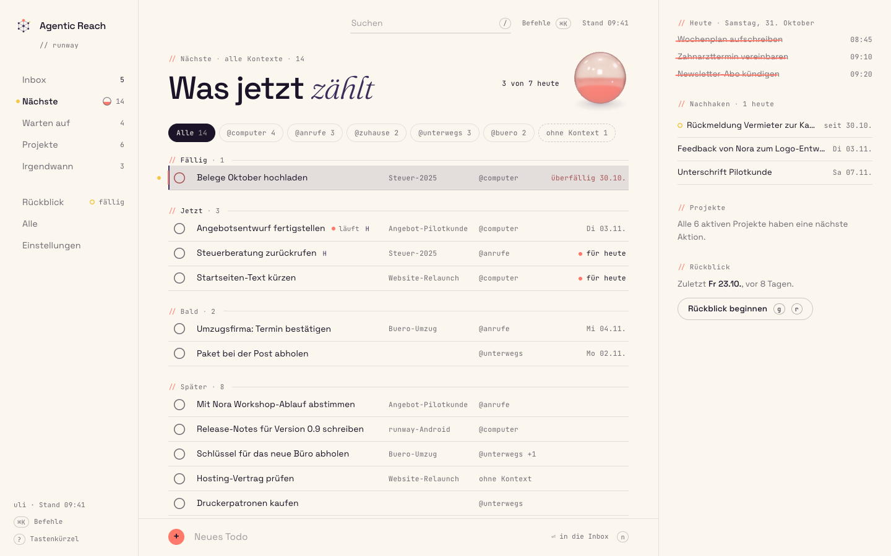
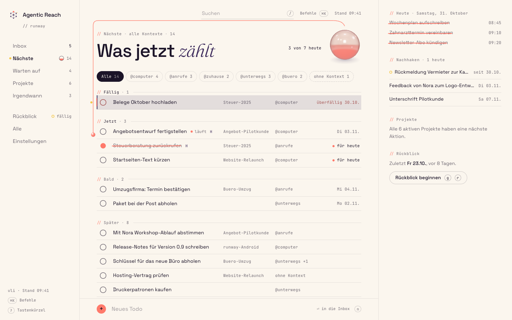
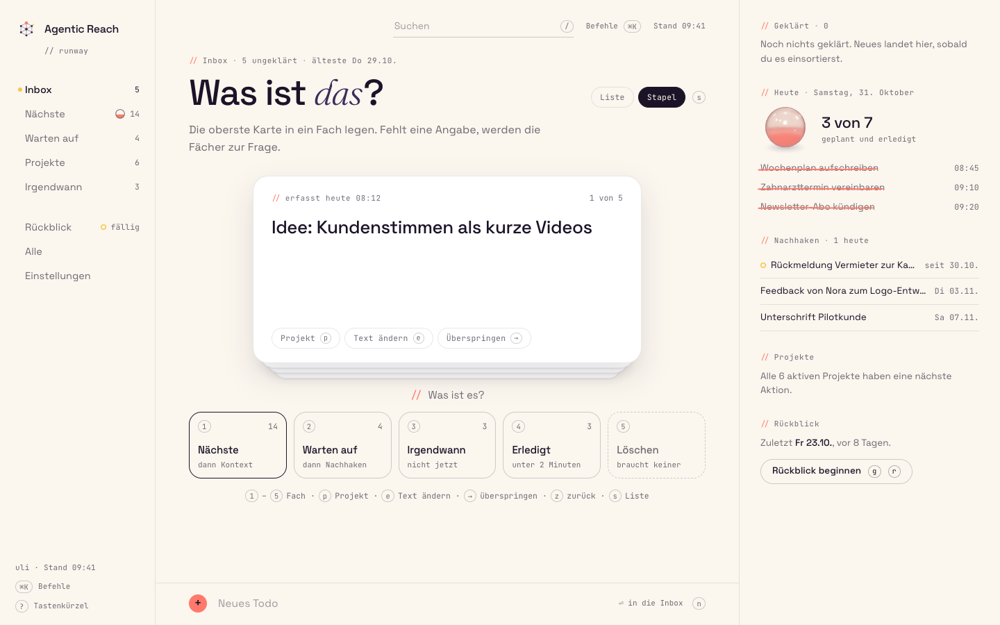
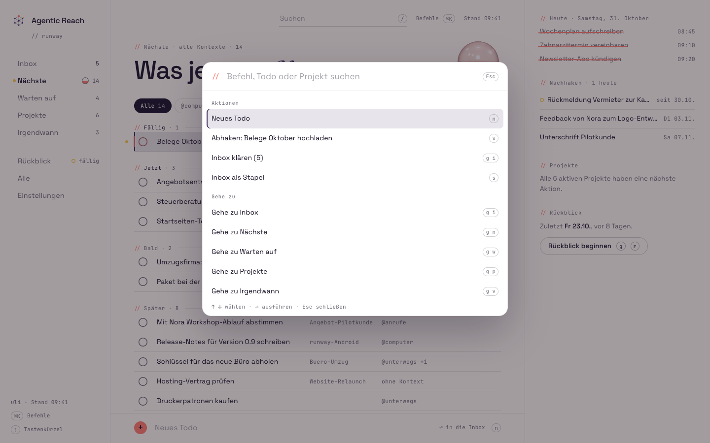
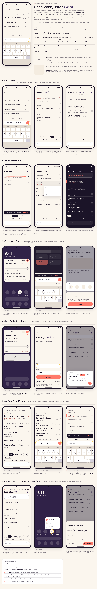
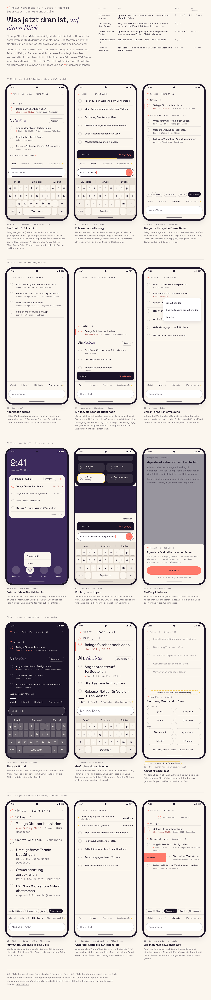
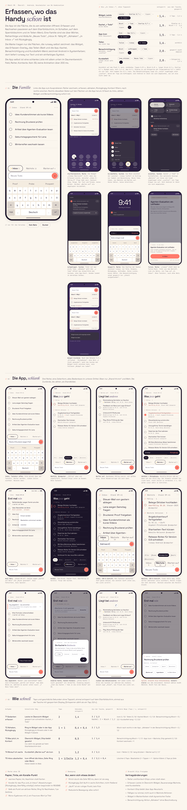
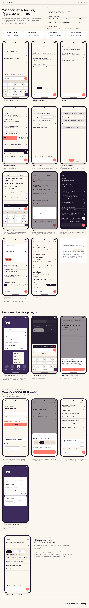
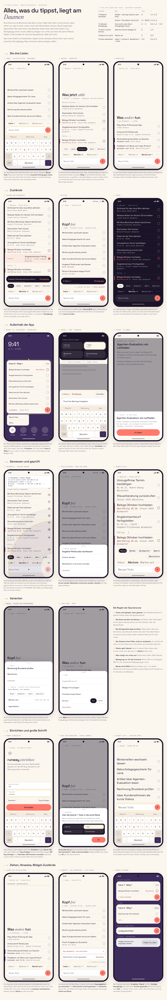

Uli chose the combination of the three for the web: 03 Papier & Tinte as the base, 01’s Tageslinse and 05’s card stack. Below is that web design as built, followed by five Android proposals without 3D effects: most efficient, easy to use, and still clearly Agentic Reach. They are ordered by the judge’s ranking, then compared, with a recommendation, grafts and the questions for Uli. Round 1 (the five original web + Android proposals) follows further down.
Papier & Tinte with one piece of glass and a stack of cards: 03’s editorial page and keymap, 01’s Tageslinse as the single WebGL object, 05’s card stack for touch Klären, plus 04’s sections and ⌘K palette and 02’s write path.

Web · desktop
Signature: bead into the lens
Card stack (Stapel)
⌘K palette06-kombination delivers the recommendation as written:
The ink bloom was cut for the right reason (a second canvas). The desktop (web-desktop.png, web-signature.png) is close to Linear density with a calm margin column. My estimate: efficiency 8, ease of use 7.5, brand fit 7.5, consistency 8.5, feasibility 6.5.
Android only, no shader and no Three.js. Each proposal keeps the Agentic Reach look of the web design and optimises for taps, reach and calm. The board shows every screen and state; tap counts are the judge’s own (T1 capture, T2 tick off, T3 what now, T4 waiting for, T5 clear the Inbox).
The web page split along the thumb: read at the top, and undo, chips, three tabs and the 'Neues Todo' field (on every tab) in the bottom third, with a trailing check ring.

BoardFull board →My count from the home screen, warm. T1: icon + Enter = 2 (field already focused); widget '+' + Enter = 2; tile: swipe + 2; share: Teilen + runway + In Inbox = 3; on Nächste or Warten auf: field + Enter = 2 (today 3). T2: 1 (+1 to undo). The trailing ring is easy in the lower two thirds; top rows need a stretch or a swipe, which the README now admits. T3: icon + Nächste + chip = 3, or 2 with the remembered chip (CC4); widget glance = 0. T4: icon + Warten auf = 2. T5: icon = 1, then per item tick 1, delete 2, edit 3.
Effort (pd) 16-20 (README says 14, which is too low for a bottom dock with IME handling, heading fold, banners and 9 contract negotiations)
The app opens on one calm 'Jetzt' screen (Fällig + the top three next actions in the remembered context, bottom-anchored above tabs and a focused field), with Inbox, Nächste and Warten auf one tab away.

BoardFull board →My count. T1: icon + Enter = 2; widget '+' + Enter = 2; tile: swipe + 2; share 3. T2: 1 (+1 undo). The rings are on the leading edge, which is a stretch for a right thumb; with the keyboard up (how Jetzt opens) they sit at y 160-415 dp. T3: icon = 1. This is the only proposal where 'what now in my context' is answered by opening the app; changing context costs +2 (chip in the heading, then the context). T4: the count and yellow dot are visible on open (1 for awareness), list = 2. T5: icon + Inbox tab = 2, then per item tick 1, delete 2, edit 2 + Enter.
Effort (pd) 24-28 (+4 for the optional Kurz klären)
Capture and glance move out of the app: a home-screen widget with a capture bar, the tile, optional quiet notification with direct reply, pinnable shortcuts and share, while the app becomes a lean bottom-dock list.

BoardFull board →My count. T1: widget capture bar + Enter = 2 (about 1.4 s with the 0.7 s overlay budget), the same tap count as m1's widget '+'; icon + Enter = 2; tile: swipe + 2; share 3; notification: swipe + expand + '+ Todo' + send = swipe + 3. T2: 1 (+1 undo), with the leading ring as on the web. T3: widget glance = 0, but only while on the home screen; in the app: icon + Nächste = 2 with the remembered chip. T4: pinned 'Warten auf' shortcut = 1, else 2. T5: icon = 1, then per row 1 (tick) or 2 (menu).
Effort (pd) 30-35 (+4 quick clarify); 26-30 without the notification
The whole row is the target: swipe right ticks off, swipe left opens actions, long press selects several; every gesture has a visible button and an accessibility action, and all taps sit in the bottom stack.

BoardFull board →My count. T1: icon + Enter = 2; widget '+' + Enter = 2; tile: swipe + 2; share 3. In-app on Nächste: field + Enter = 2, and you stay on the tab with the chip kept (verified: judge/m4-capture-next.png, @business still selected, Inbox 6 with a yellow dot). T2: 1 swipe or 1 ring (trailing) (+1 undo); five at once: hold + 4 + Abhaken = 6. T3: pinned 'Nächste' shortcut = 1, else icon + tab = 2 (chip remembered). T4: shortcut 1, else 2. T5: icon = 1, then per item swipe 1, delete 2 (swipe left + Löschen); junk batch of five 6 taps with one undo.
Effort (pd) 30-36 (+3 quick clarify)
Everything you tap is in one dock at the bottom, and every list is drawn in reach order: the newest capture and the most overdue row sit last, right above the dock.

BoardFull board →My count. T1: icon + Enter = 2; widget '+' (now bottom right) + Enter = 2; tile: swipe + 2; share 3; another tab: field + Enter = 2. T2: 1 (+1 undo). On Nächste the 4 most urgent rings are now in the easy band. In the Inbox with the keyboard up (how it opens) 4 of 5 rings are still stretch or hard, so effectively 2 taps (dismiss keyboard + ring). T3: icon + Nächste + chip = 3, or 2 with the optional remembered chip; widget 0. T4: icon + Warten auf = 2. T5: icon = 1 (+1 to drop the keyboard), then tick 1, delete 2, edit 2 + Enter.
Effort (pd) 28-32 (+4-5 quick clarify)
Scores 1-10 as given by the judge; the average is the mean of the six scores. Rows in ranking order. Effort in person-days (pd) before grafts.
| Proposal | Efficiency | Ease of use | Brand fit | Consistency with web | Contract compliance | Feasibility | Average | Taps | Effort (pd) |
|---|---|---|---|---|---|---|---|---|---|
| Papier mobilm3-papier-mobil | 7 | 7.5 | 8.5 | 8.5 | 6.5 | 8 | 7.7 | My count from the home screen, warm. T1: icon + Enter = 2 (field already focused); widget '+' + Enter = 2; tile: swipe + 2; share: Teilen + runway + In Inbox = 3; on Nächste or Warten auf: field + Enter = 2 (today 3). T2: 1 (+1 to undo). The trailing ring is easy in the lower two thirds; top rows need a stretch or a swipe, which the README now admits. T3: icon + Nächste + chip = 3, or 2 with the remembered chip (CC4); widget glance = 0. T4: icon + Warten auf = 2. T5: icon = 1, then per item tick 1, delete 2, edit 3. | 16-20 (README says 14, which is too low for a bottom dock with IME handling, heading fold, banners and 9 contract negotiations) |
| Jetztm2-jetzt | 8 | 7.5 | 8 | 7.5 | 5 | 7 | 7.2 | My count. T1: icon + Enter = 2; widget '+' + Enter = 2; tile: swipe + 2; share 3. T2: 1 (+1 undo). The rings are on the leading edge, which is a stretch for a right thumb; with the keyboard up (how Jetzt opens) they sit at y 160-415 dp. T3: icon = 1. This is the only proposal where 'what now in my context' is answered by opening the app; changing context costs +2 (chip in the heading, then the context). T4: the count and yellow dot are visible on open (1 for awareness), list = 2. T5: icon + Inbox tab = 2, then per item tick 1, delete 2, edit 2 + Enter. | 24-28 (+4 for the optional Kurz klären) |
| Überallm5-ueberall | 7.5 | 7 | 7.5 | 7.5 | 5.5 | 6.5 | 6.9 | My count. T1: widget capture bar + Enter = 2 (about 1.4 s with the 0.7 s overlay budget), the same tap count as m1's widget '+'; icon + Enter = 2; tile: swipe + 2; share 3; notification: swipe + expand + '+ Todo' + send = swipe + 3. T2: 1 (+1 undo), with the leading ring as on the web. T3: widget glance = 0, but only while on the home screen; in the app: icon + Nächste = 2 with the remembered chip. T4: pinned 'Warten auf' shortcut = 1, else 2. T5: icon = 1, then per row 1 (tick) or 2 (menu). | 30-35 (+4 quick clarify); 26-30 without the notification |
| Gestenm4-gesten | 7.5 | 6.5 | 8 | 6.5 | 5 | 6.5 | 6.7 | My count. T1: icon + Enter = 2; widget '+' + Enter = 2; tile: swipe + 2; share 3. In-app on Nächste: field + Enter = 2, and you stay on the tab with the chip kept (verified: judge/m4-capture-next.png, @business still selected, Inbox 6 with a yellow dot). T2: 1 swipe or 1 ring (trailing) (+1 undo); five at once: hold + 4 + Abhaken = 6. T3: pinned 'Nächste' shortcut = 1, else icon + tab = 2 (chip remembered). T4: shortcut 1, else 2. T5: icon = 1, then per item swipe 1, delete 2 (swipe left + Löschen); junk batch of five 6 taps with one undo. | 30-36 (+3 quick clarify) |
| Daumenzonem1-daumenzone | 7.5 | 6 | 7.5 | 5.5 | 4.5 | 6.5 | 6.3 | My count. T1: icon + Enter = 2; widget '+' (now bottom right) + Enter = 2; tile: swipe + 2; share 3; another tab: field + Enter = 2. T2: 1 (+1 undo). On Nächste the 4 most urgent rings are now in the easy band. In the Inbox with the keyboard up (how it opens) 4 of 5 rings are still stretch or hard, so effectively 2 taps (dismiss keyboard + ring). T3: icon + Nächste + chip = 3, or 2 with the optional remembered chip; widget 0. T4: icon + Warten auf = 2. T5: icon = 1 (+1 to drop the keyboard), then tick 1, delete 2, edit 2 + Enter. | 28-32 (+4-5 quick clarify) |
Base: m3 Papier mobil. Grafts: m2’s Jetzt answer, m4’s capture behaviour, m5’s widget capture bar, and 06’s lens as a flat ring.
Why m3. Tap counts barely differ across the five. I counted T1 = 2, T2 = 1 + 1 and T4 = 2 for every proposal from the app icon, and every proposal reaches T3 = 0 on the widget. So the decision rests on reach, calm, contract cost and how closely the phone matches the web. m3 is the only proposal that is at the same time:
Its gap is that it has no answer to 'what now' beyond a flat list, and m2 has the best one. On scores it sits at about 7.5 overall, ahead of m2 (about 7.1).
How it pairs with 06. Strong once three mismatches are fixed:
The context sets also differ:
Every board hides this by mapping demo data. That is round-1 open question 12 and it now blocks consistency.
Ring side is the one deliberate split. Trailing on Android (thumb) against leading on the web (reading order) is defensible, because swipe right is the shared gesture, but Uli should confirm it.
Effort for m3 plus the grafts: 22-28 pd on Android, on top of the shared token and rules foundation.
10 elements to carry over into the Android build, with the judge’s effort estimate where given.
The 'Jetzt' answer, but not as a fourth tab or a new start screen (that breaks the frozen done-bar U2). Nächste opens with Fällig, then 06's Jetzt section (overdue, due today, running, prio H, für heute) in the remembered context, then Bald and Später collapsed under 'N weitere'. This gives T3 = 2 taps (icon + Nächste) with no contract change beyond m3's, and the same section words as the web. +1.5-2.5 pd.
The widget shows Fällig + Jetzt of its chip context (the same model as the app), with '+K weitere' hidden at 0. +0.5-1 pd.
Capture from Nächste or Warten auf keeps the tab and the chip, the notice reads 'In Inbox ✓ · <text> · Rückgängig', and the Inbox tab count gets a yellow dot until visited (verified working in judge/m4-capture-next.png). +0.5-1 pd.
Dynamic, pinnable launcher shortcuts 'Nächste' and 'Warten auf' next to the pinned 'Neues Todo' and 'Inbox', for 1-tap T3/T4 from the home screen. +0.5 pd.
The Inbox row menu as a bottom sheet in thumb reach (same items, one tap), replacing m3's dropdown that covers the row text. m1 and m5 do the same. +0.5 pd.
The widget capture bar as the first row ('Neues Todo' + coral '+', contentDescription '+ Todo'), replacing the small header '+'. +1-1.5 pd.
Draw the QS tile, shade and launcher popup in system colours on the board and in the spec. Fix m3's coral QS tile, which Android cannot render.
Replace m3's tally with the lens's flat form (the 2D ring with liquid level from 01's Glance vector levels, plus '3 von 7 heute' and '· N zusätzlich'), and the same 't' / 'für heute' rule. No shader, no 3D. +1-2 pd.
If Uli lifts the clarify non-goal, use m4's quick clarify (Nächste always asks for a context; Warten auf asks for the follow-up day). Drop m3's bare 'Nächste' chip, which guesses metadata. +3-4 pd, optional.
An in-place confirm for 'Altes Konto … Verwerfen' and the pull-to-refresh as a 1 px yellow line plus mono text (no spinner), both already close to m3's.
11 decisions before the Android build starts.
The first round, unchanged: five unified designs for web and Android, the judge’s comparison, the recommendation Uli accepted (03 + 01’s Tageslinse + 05’s card stack), grafts, the common foundation and the round-1 open questions.
runway is the GTD todo manager Uli uses many times a day, for business and private life in one system. Today the web app and the Android app look and behave differently. Each proposal below is one unified design for both, in Agentic Reach branding, with Three.js only where it earns its place. They are ordered by the judge’s ranking: click through to the working prototypes, then read the comparison and the recommendation.
An editorial page in place of an app chrome: typography, hairlines and a margin column carry all the structure. A coral pen stroke marks done, a tally shows today's work, and one Three.js ink bloom plays only when the Inbox goes to zero.
0-5 filter contexts on Nächste, and the docked clarify panel at 761-1180 px means a key never acts unseen. This is the only proposal that reaches Linear-level keyboard work.The base of the real build: the IA, row anatomy, keyboard model, list rules, Android states and token pipeline, with a richer signature effect grafted on top.
Paper cards on warm ground plus one data-carrying glass object, the Tageslinse. Its coral liquid level is today's planned progress ('4 von 7'), and each completed todo flies into it as a bead along a coral thread.
Its Tageslinse is the best single 3D graft: one persistent, meaningful, cheap-at-idle object that works on web, Android and the widget.
A desk of tangible things: you clarify the Inbox by picking the top card off a stack and dropping it into GTD trays, which turn into the follow-up answers when one is needed. You tick a todo off with a clay pill that squishes, and a toy version of the mark lights up as today's Inbox clears.
Its card stack is the best graft for Inbox processing on touch (phone web and Android Klären) and as an optional 'Stapel' mode on desktop.
A 3D clay disc beside the list: each context is a sector, three urgency rings sit around you at the centre, glazed beads are next actions and clay beads in a tray are the inbox, and a completed bead flies into the hub.
?volume=real, 04-real.png): @computer takes half the disc with +11/+2/+1 beads, @home's beads stack into a column, three sectors are empty, and the inbox tray shows '+16'. The answer it gives is 'most things are @computer and later', which the sidebar counts already say.A source of ideas (ring-based sections, ohne-Kontext handling, ⌘K palette), not the base to build.
Nächste as an airfield: the top three next actions in the active context wait 'cleared' at the runway threshold in three urgency tiers, a completed one lifts off on a coral trail, waiting items circle in a holding pattern, and inbox pucks sit on the apron.
Its outbox and i18n engineering and the 'Fällig · andere Kontexte' filter rule; not the visual direction.
Scores 1-10; the average is the mean of the seven scores. Rows in ranking order. Effort in person-days (pd) before grafts.
| Proposal | Usability | Appeal | Brand fit | Three.js value | Web feasibility | Android feasibility | Cross-platform unity | Average | Effort web (pd) | Effort Android (pd) |
|---|---|---|---|---|---|---|---|---|---|---|
| Papier & Tinte03-papier-und-tinte | 8 | 7 | 8.5 | 3.5 | 8.5 | 7.5 | 8.5 | 7.4 | 30-36 | 26-32 |
| Warmes Glas01-warmes-glas | 7 | 7.5 | 7.5 | 5.5 | 7 | 6.5 | 8.5 | 7.1 | 42-50 | 30-38 |
| Greifbar05-greifbar | 7 | 7.5 | 7 | 5 | 7 | 6 | 7.5 | 6.7 | 34-40 | 30-36 |
| Orbit04-orbit | 6 | 7 | 7 | 4.5 | 6 | 5 | 6.5 | 6 | 45-55 | 40-48 |
| Startbahn02-startbahn | 6.5 | 6.5 | 6 | 4 | 6.5 | 5.5 | 7 | 6 | 46-55 | 33-42 |
Base: 03 Papier & Tinte. Grafts: 01’s Tageslinse and 05’s card stack.
Why. 03 is the only proposal where the parts Uli uses many times a day (Nächste, the Inbox with the keyboard up, triage, Warten auf, the outbox states) are designed to Things/Linear level on both platforms. It also has the only API-verified list rules (tags_add/tags_remove with an exact inverse, tested), is closest to the brand kit, and costs the least (web about 30-36 pd, Android about 26-32 pd before grafts). Its one real gap is the request itself: 'fancy, very cool, three.js'. Its only 3D moment shows at most once a day and looks like a stain mid-bloom. 01 and 05 each fill that gap with an effect that carries meaning, which 02 and 04 do not: at real volume their 3D centrepieces repeat what the list already says, need legends, and take the most valuable space.
Concretely. Keep 03's shell (rail + page column + margin column, phone tabs), row anatomy, headings and keymap. Replace the margin's tally count with the Tageslinse as the persistent 3D object in the Nächste header and in the margin (web Three.js, Android AGSL, Glance vector levels). Keep the struck-through 'Heute' list beneath it. Add the card stack as the touch Klären mode and as an optional 'Stapel' view on desktop. Keep the ink bloom only if budget remains; it is the first thing to cut.
Total effort with grafts: web 38-46 pd, Android 32-40 pd, plus 1 backend day if the handoff endpoints are approved. Scores are on one scale (5 = average app, 8 = Things 3 / Linear). No proposal reaches 8 overall: 03 gets there on usability and unity, but none gets there on effects value.
9 elements to carry over from the other proposals into the build, whichever look wins.
The Tageslinse: a glass lens whose liquid level is planned progress today. It uses the stable rule from dayProgress.js (total = due ≤ today + scheduled ≤ today + started, plus planned-and-done; unplanned completions shown as '· 1 zusätzlich'). Bead flight only for planned todos, the 14 px sidebar ring, the Android top-bar AGSL version (android/tageslinse.agsl) and the nine Glance vector levels.
It is the only 3D object across the five that carries a persistent number worth glancing at. It costs 0 frames idle, and it gives 03 the 'cool' Uli asked for without touching its density. The lens replaces 03's tally count; 03's struck-through 'Heute' list stays.
The Inbox card stack (stack.js/card.js): DOM card with CSS 3D springs, five trays with keys 1-5, trays turning into the answers (contexts 1-9, follow-up days, Zurück/Esc/Back), the Stapel/Liste toggle, and 'Klären · N' on phone web and Android.
It is the best touch clarify flow. 03's two-key panel stays the default on desktop, and the stack becomes the touch mode and an optional desktop mode. Both drive the same rules.js moves.
The 'never guess metadata' rule: every route into Nächste requires a context (the store refuses Nächste without one), and Warten auf asks for a follow-up day (morgen · Freitag · nächste Woche · ohne Datum) that writes scheduled.
It fixes a silent data-quality bug class (the original web tagged @computer by default) and makes the Nachhaken sections work.
The Android IME rule: while the keyboard is up, the top bar is a 48 dp text tab row Inbox · Nächste · Warten auf, so another list is one tap away; the draft is kept on scroll or Back.
It keeps P08 §1 satisfied whatever navigation Uli picks.
The ring rule as list sections in Nächste: after Fällig, group into Jetzt (overdue, due today, running, prio H) · Bald (due ≤ 7 days, prio M) · Später, computed from fields Uli sets, not the urgency score. Plus the 'ohne Kontext' filter chip.
It makes the long Nächste list scannable at Uli's real volume (39 next actions) with no 3D needed, and it removes the misleading scheduled-date urgency bonus.
The ⌘K command palette (actions + navigation + search).
03 left it out deliberately. It is the one Linear feature missing for a keyboard-first desktop user, and it costs about 2 pd.
The web write path: captures POSTed at once (undo = DELETE); other writes held 6 s, mirrored to IndexedDB and flushed with keepalive on pagehide/visibilitychange; visible 'Nicht gesendet · Erneut senden' on the row and in the footer.
It is the most concrete no-data-loss design for the web client and pairs with 03's inverse-tag undo.
The context filter rule: due items from other contexts stay visible in an unranked 'Fällig · andere Kontexte' section when a context is active.
Overdue work never disappears behind a filter, and the main list stays honest about context.
The i18n structure (every string a key, German default), even if v1 ships German only.
It costs almost nothing now and avoids touching every component later; it also answers the kit's data-i18n rule.
What the real build needs whichever proposal is chosen: tokens, rules, components, effects policy, Android mapping, vocabulary.
One tokens.json (brand primitives copied from shared/brand/tokens.css plus semantic tokens: bg, sheet, ink, text, mute, line, plum-light, action-ink = coral 62 % + ink for small coral text, overdue, done, focus, light and dark values). A generator writes tokens.css, a Tailwind theme mapping and RunwayTokens.kt (resolved sRGB for Compose). CI checks the hash of the generated files against tokens.json. Ink text on coral buttons everywhere. JetBrains Mono 400 only. Fonts bundled locally (woff2 on web, res/font on Android). Dynamic colour off on Android.
One pure GTD rule set (lists from the server definition with +next required; Inbox = no tags and no project; lenient context rule on Nächste and the widget; Fällig never filtered; list moves as tags_add/tags_remove with exact inverses for undo; 6 s hold for complete/delete with Rückgängig; outbox semantics). Written once in TypeScript (frontend/src/shared) and once in Kotlin, both run against the same JSON test vectors (start from 03's rules.test.mjs).
AppShell (web rail + optional margin column; phone tabs), PageHeader (mono eyebrow with 'Stand hh:mm' + heading + one Fraunces accent word), SectionHeader ('// Fällig · 1'), TaskRow (check ring, title, mono meta, overdue edge rule, läuft pulse dot, outbox status line, swipe on Android), ContextChips (wrap, never scroll), CaptureBar (N on web; bottom field on Android; never asks for metadata), UndoNotice with the 1 px yellow time line, ClarifyPanel / ClarifySheet / CardStack (same outcomes and keys), DetailPanel/Sheet, ProjectRow with the 'steht still' state and inline next-action field, ReviewSteps, EmptyState, ErrorRow and Banner, CommandPalette (web), and the Android-only Widget, TileOverlay, ShareCard and LauncherIcon.
Every effect explains state or gives feedback, or it is cut. At most one WebGL canvas per screen, imported lazily after first paint, rendering only while something changes (target 0 frames idle, measured in CI with proto.frames-style counters), paused when hidden. Context loss, no WebGL and prefers-reduced-motion all fall back to a static SVG with the same information. No text in WebGL. NeutralToneMapping, clamp before pow(), no full-screen bloom on light themes. Android uses AGSL RuntimeShader / Compose Canvas only (no Filament, no bitmaps in Glance), and the shader composable exists only while visible. Budgets: first paint never waits for Three.js, and Android cold start for the tile overlay stays within its 700 ms budget.
Compose theme generated from tokens. Navigation is the pinned three text tabs + Mehr unless Uli approves a bottom nav; either way there is a text tab row while the IME is up. Rows map 1:1 to TaskRow with swipe-to-complete and haptics. The Glance widget uses text + vector drawables. The tile and overlay are plain Views with only field, notice, Rückgängig and Schließen. The share card is one tap to 'In Inbox'. Details open in a Custom Tab on the web route ?task=<uuid> (native sheet only if the non-goal is lifted). All writes go through the existing outbox, and the acceptance-test string pins (Fällig, Stand hh:mm, Nachhaken, list names) are kept literally on both clients.
Inbox · Nächste · Warten auf · Projekte · Irgendwann, Wochenrückblick, Alle Todos, Einstellungen; 'Todo' as the noun; German UI; the same date formats (Europe/Berlin).
15 decisions before the build starts. Several are deliberate deviations from the brand kit.